This module allows you to request some amount and reconcile with specific expenses account or return as a cash, with dynamic
approval process for (Cash request/Cash Reconcile) we can summarize the procedure for this module as follows:
Key Features:
- Cash Request user employee request cash. - Cash Request Manager manager approve the request.
Activate Dynamic approval process for both cash request/cash reconcile by setting:
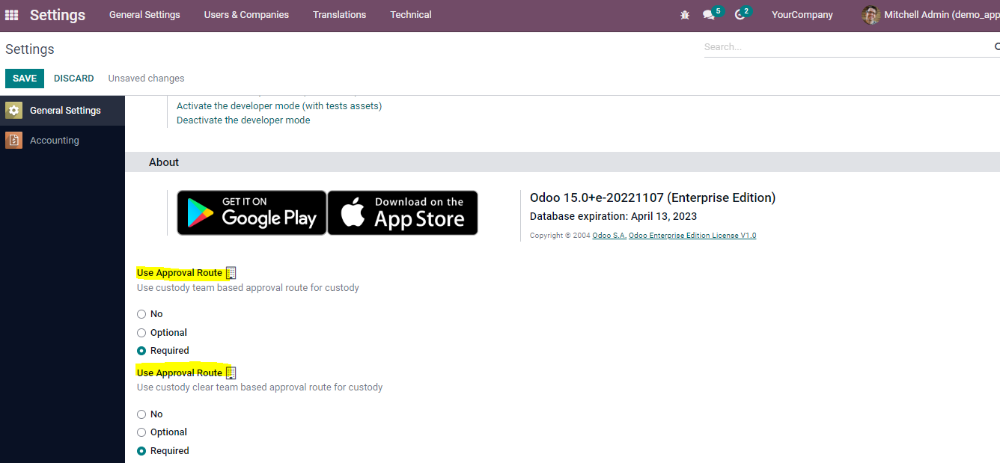
Assign custody account in company configuration form:
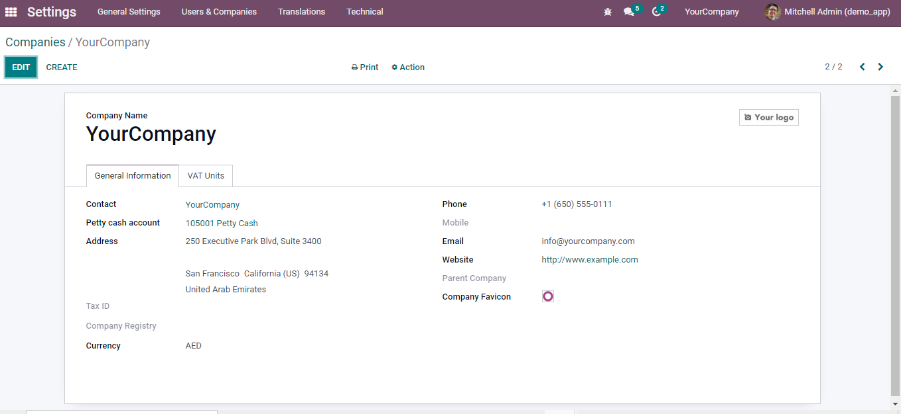
Add Dynamic approval form:
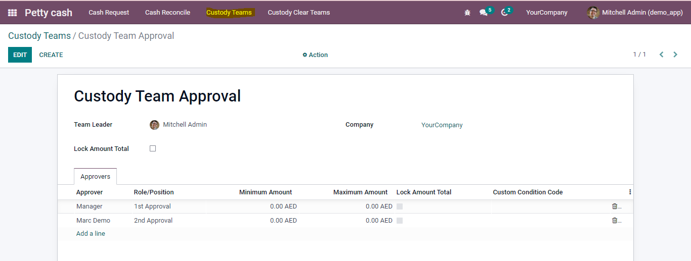
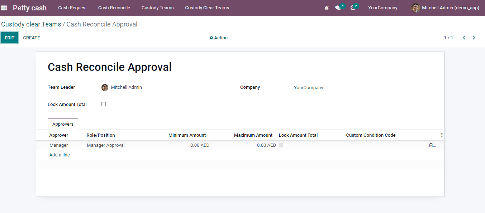
Grant user group of Request cash and request reconcile to make cash request/reconcile:
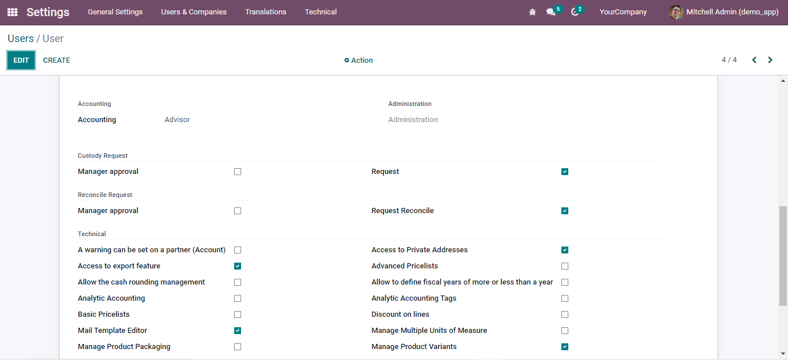
Then user can make cash request and submitted:
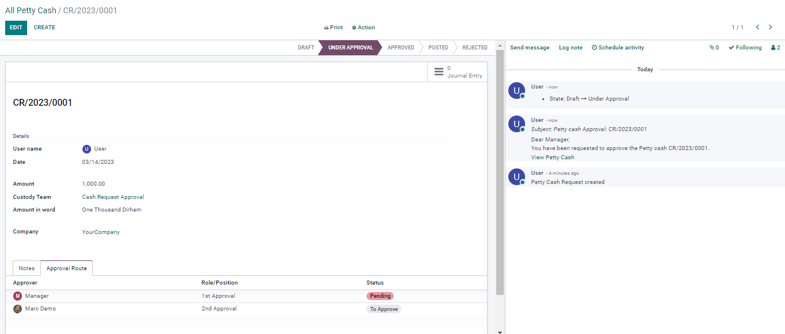
Manager can approve it by dynamic approval as a user:
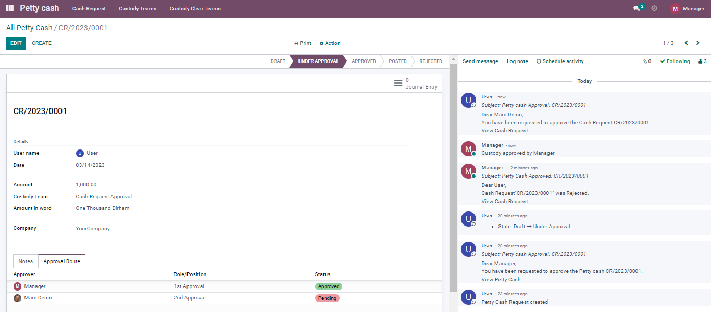
Final approval will be Accountant (posting stage):
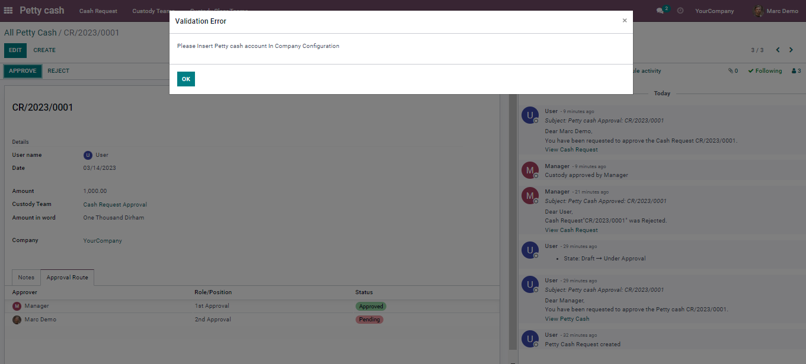
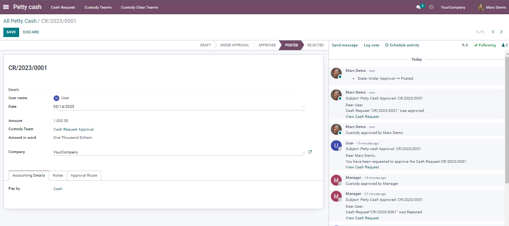
Journal entry created and posted automatically:
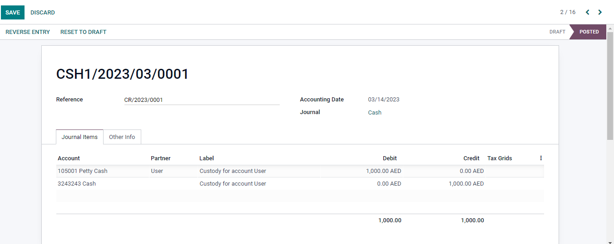
User make reconcile request by adding expense lines:
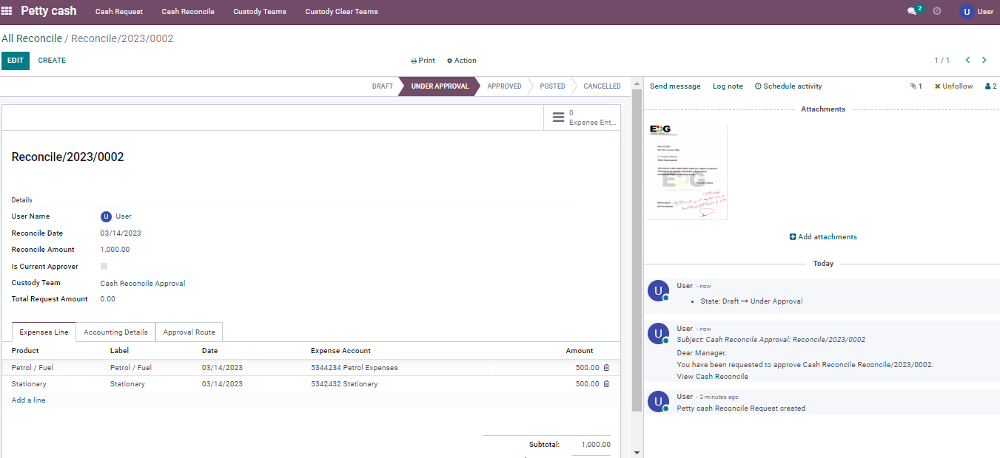
Again, going for dynamic approval as user wise:
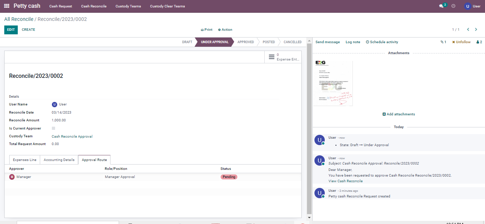
Last approval will be accountant (posting state):
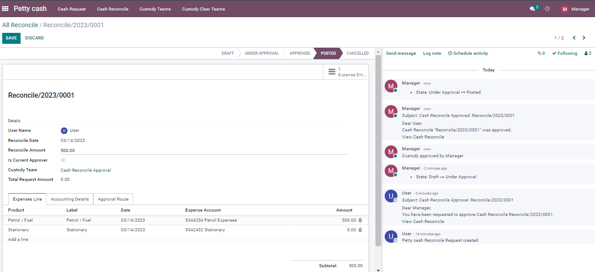
Final it is accounting statement for the custody:
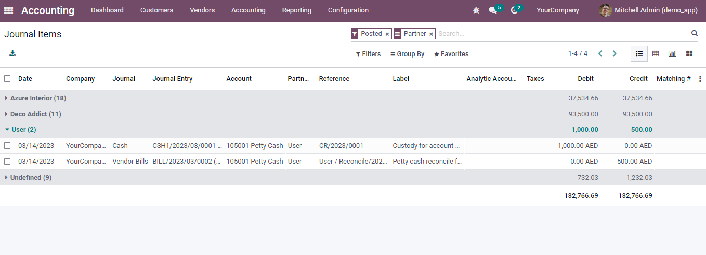
Contact us for Support, Customization, Implementation: Email: info@softguidetech.com Website: www.softguidetech.com Instagram: www.instagram.com/softguidetechnology